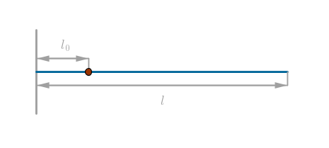
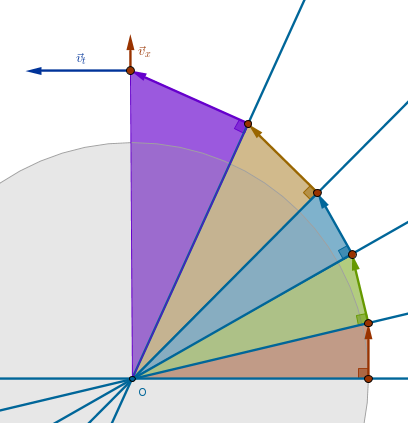

Problem
In the initial, steady, state a massless rod of length \(l\) rotating at a constant angular velocity \(\omega_0\) in the horizontal plane about a fixed vertical axis has a point mass (bead) attached to it with a thread of length \(l_0\):
At a certain moment the thread holding the bead in position is cut. The bead starts sliding along the rod away from the axis of rotation without friction.
1) What will the velocity of the bead relative to the rod be at the moment when the bead separates from and slides off the rod?
2) How long will it take the bead to separate from the rod?
Solution
We will use the method of Lagrange to solve this problem. We will make the plane of rotation be the position of the system with zero potential energy. Consequently, since there is no friction in the system, the kinetic energy of the system will be composed of the kinetic energy of the bead's rotation and the kinetic energy of the bead's motion relative to the rod:
$$L = T - U = T$$ $$T = \frac {J\omega_0^2}{2} + \frac {mv^2}{2}$$where \(J\) is the bead's moment of inertia and \(v\) is the beads velocity relative to the rod.
Let \(x\) be the distance of the rotating and sliding (roliding or slitating) bead from the axis of rotation at an arbitrary point of time. Then the moment of the bead's inertia at an arbitrary moment of time after the thread which held the bead in a fixed position was cut is:
$$J = mx^2$$Since there is no friction in the system, the angular momentum is conserved and from that it follows that since the rod itself is massless and has no angular momentum, then the angular momentum of the system is equal to the angular momentum of the bead:
$$\frac {ml_0^2\omega_0^2}{2} = \frac {mx^2\omega}{2}$$For the above equality to stand, it follows that as \(x\) increases then \(\omega\), the bead's current angular velocity, must decrease and the system, left to itself, must slow down.
Here we have two options:
- the system has an external input of energy tuned perfectly to keep the bead and the rod rotating at constant angular velocity, \(\omega_0\)
- the system has no external input, it will slow down over time, the bead's angular velocity is a decreasing function of time
Option 1
In this case the Lagrangian of the system is:
$$L = \frac {mx^2\omega_0^2}{2} + \frac {m \dot x^2}{2}$$and the Euler-Lagrangian equations are:
$$\frac {d}{dt} \frac {\partial L}{\partial \dot x} = \frac {\partial L}{\partial x}$$ $$\frac {\partial L}{\partial \dot x} = m \dot x, \quad \frac {d(m \dot x)}{dt} = m \ddot x$$ $$\frac {\partial L}{\partial x} = mx\omega_0^2$$ $$m \ddot x = mx\omega_0^2$$ $$\begin{equation} \ddot x = \omega_0^2 x \end{equation}$$since the bead's mass remains constant at all times.
Now instead of solving (1), which of course we can do without any problems, we use the equivalence approach or principle by observing that purely mathematically or arithmetically (1), a single differential equation of the second order, is equivalent to the pair of differential equations of the first order, (1) and (2), from Armies section:
$$\begin{equation} \dot a = - \beta b \end{equation}$$ $$\begin{equation} \dot b = - \alpha a \end{equation}$$From (2) for \(b\) we have:
$$\begin{equation} b = - \frac {1}{\beta} \dot a \end{equation}$$Differentiating (4) over time, we obtain:
$$\begin{equation} \dot b = - \frac {1}{\beta} \ddot a \end{equation}$$Equating (3) and (5), we have:
$$\begin{equation} \ddot a = \omega_0^2 a, \quad \omega_0 = \alpha = \beta \end{equation}$$rendering (1) and (6) mathematically equivalent even though on the surface these two problems, seemingly, have nothing in common - one is a math problem and the other is a physics problem.
Consequently, we put forward the following equivalencies:
- the bead's coordinate \(x\) as measured along the rod is equivalent to the number of troops of the army \(A\):
$$x \equiv a$$- the bead's radial velocity relative to the rod, \(\dot x\), according to (2), is equivalent to the number of troops of the army \(B\):
$$\dot x = v \equiv -\beta b = \dot a$$Before we claim the solution for the this problem, however, we observe that in the Armies problem, in the direct flow of time, the magnitudes in question were diminishing while in this problem \(x\) and \(\dot x\) are growing.
Consequently, to establish the correct equivalence between these two problems we must reverse the flow of time for one of them and adjust the signs of derivatives:
- the initial number of troops \(a_0\) of the army \(A\) we correlate with the length of the rod \(l\) or the bead's final or separation magnitude of its coordinate along the rod \(x\):
$$a_0 \equiv l$$- the final number of surviving troops \(a(b = 0)\) of the army \(A\) we correlate with \(l_0\) or the bead's initial position on the rod:
$$a(b = 0) \equiv l_0$$- the initial number of troops \(b_0\) of the army \(B\) we correlate with the bead's radial velocity relative to the rod at separation time, \(v_s\), with its sign adjusted since the negative sign of the rate of change of the army \(A\)'s number of troops means that that number is diminishing while the bead's radial velocity relative to the rod grows with time:
$$b_0 \equiv \frac {v_s}{\beta}$$- the final number of surviving troops \(b = 0\) of the army \(B\) we correlate with the bead's initial radial velocity relative to the rod:
$$b = 0 = v_0$$1) Separation Velocity
We can now answer the first question of this problem by computing the bead's radial velocity relative to the rod at the moment when the bead reaches the rod's end and flies off of it. From Armies equation (5)
$$a(b = 0) = \sqrt{a_0^2 - \frac {\beta}{\alpha}b_0^2}$$it follows that:
$$l_0^2 = l^2 - \frac {\beta}{\alpha} \frac {v_s^2}{\beta^2} =$$ $$l^2 - \frac {v_s^2}{\alpha \beta} =$$ $$l^2 - \frac {v_s^2}{\omega_0^2}$$ $$\begin{equation} \bbox[#e8e8e8,3pt]{v_s = \omega_0 \sqrt{l^2 - l_0^2}} \end{equation}$$2) Separation Time
To answer the second question of this problem we observe that from the Armies equation (19):
$$\ln \Bigg( \frac {b}{k} + \sqrt{\frac {b^2}{k^2} + 1}\Bigg) - \ln \Bigg( \frac {b_0}{k} + \sqrt{\frac {b_0^2}{k^2} + 1}\Bigg) = -\sqrt{\alpha \beta} \; t$$it follows that since:
$$b = 0$$for the bead's separation time \(t_s\) we have:
$$- \ln \Bigg(\frac {b_0}{k} + \sqrt{\frac {b_0^2}{k^2} + 1}\Bigg) = - \sqrt{\alpha \beta} \; t_s$$ $$t_s = \frac {1}{\omega_0} \ln \Bigg(\frac {b_0}{k} + \sqrt{\frac {b_0^2}{k^2} + 1}\Bigg)$$From the Armies equation (8) for \(k\) we have (we took \(\beta = \omega_0\)):
$$k^2 = \frac {\alpha}{\beta}a_0^2 - b_0^2 = l^2 - \frac {v_s^2}{\omega_0^2} =$$ $$l^2 - \frac {\omega_0^2(l^2 - l_0^2)}{\omega_0^2} = l_0^2$$and hence:
$$\frac {b_0^2}{k^2} = \frac{v_s^2}{\omega_0^2 l_0^2} = \frac {\omega_0^2(l^2 - l_0^2)}{\omega_0^2 l_0^2} = \frac {l^2}{l_0^2} - 1$$ $$\frac {b_0}{k} = \sqrt{\frac {l^2}{l_0^2} - 1}$$and:
$$\begin{equation} \bbox[#e8e8e8,3pt]{t_s = \frac {1}{\omega_0} \ln \Bigg(\frac {l}{l_0} + \sqrt{\frac {l^2}{l_0^2} - 1}\Bigg)} \end{equation}$$3) \(x(t), \dot x(t), \ddot x(t)\)
Lastly, from the Armies equation (11), which we adjust to not have the negative sign on its right hand side since the bead's velocity grows with time, and the equation (18) it follows that in the direct flow of time we integrate from zero, the bead's initial velocity, to some arbitrary value \(v\), while the bead is still on the rod, we obtain:
$$\ln \Bigg(\frac {v}{\omega_0 k} + \sqrt{\frac {v^2}{\omega_0^2 k^2} + 1}\Bigg) = \omega_0t$$ $$\frac {v}{\omega_0 k} + \sqrt{\frac {v^2}{\omega_0^2 k^2} + 1} = e^{\omega_0t}$$ $$\sqrt{\frac {v^2}{\omega_0^2 k^2} + 1} = e^{\omega_0t} - \frac {v}{\omega_0 k}$$ $$\frac {v^2}{\omega_0^2 k^2} + 1 = e^{2\omega_0t} - \frac {2e^{\omega_0t}v}{\omega_0 k} + \frac {v^2}{\omega_0^2 k^2}$$ $$\frac {2e^{\omega_0t}v}{\omega_0 k} = e^{2\omega_0t} - 1$$ $$\begin{equation} \bbox[#e8e8e8,3pt]{v(t) = \dot x(t) = \omega_0 l_0 \frac {e^{\omega_0 t} - e^{-\omega_0 t}}{2}} \end{equation}$$Integrating (9) to obtain \(x(t)\) and differentiating (9) to obtain \(\ddot x(t)\), we have:
$$\begin{equation} \bbox[#e8e8e8,3pt]{x(t) = l_0 \frac {e^{\omega_0 t} + e^{-\omega_0 t}}{2}} \end{equation}$$ $$\begin{equation} \bbox[#e8e8e8,3pt]{\ddot x(t) = \omega_0^2 l_0 \frac {e^{\omega_0 t} + e^{-\omega_0 t}}{2}} \end{equation}$$One way to interpret the above result is to observe that the trajectory of the bead that rotates and slides simultaneously (rolides or slitates) is a type of a logarithmic spiral:
\(\blacksquare\)